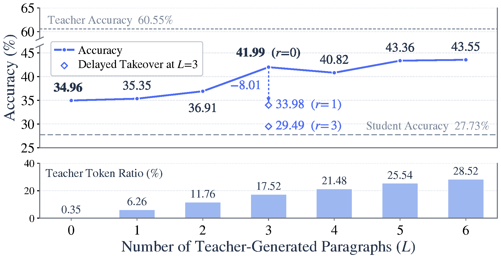
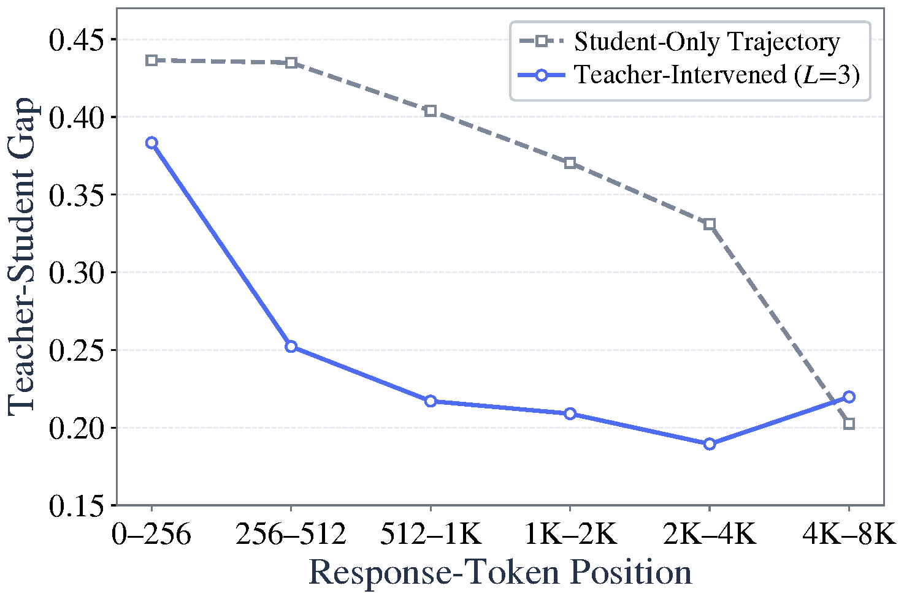
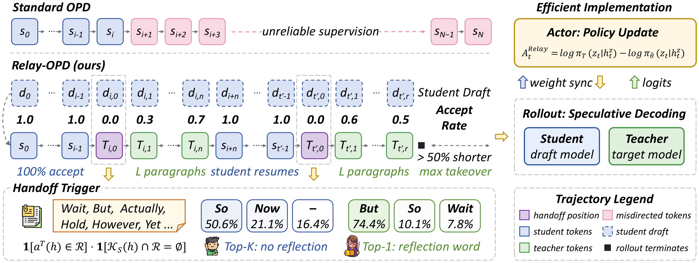
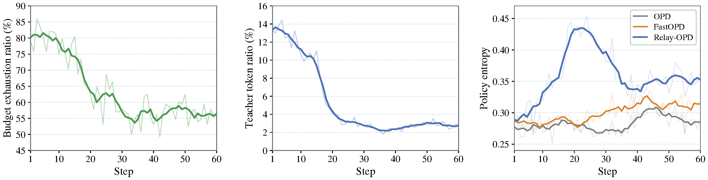
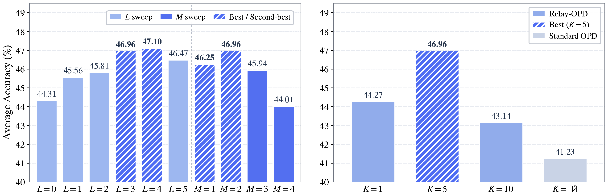
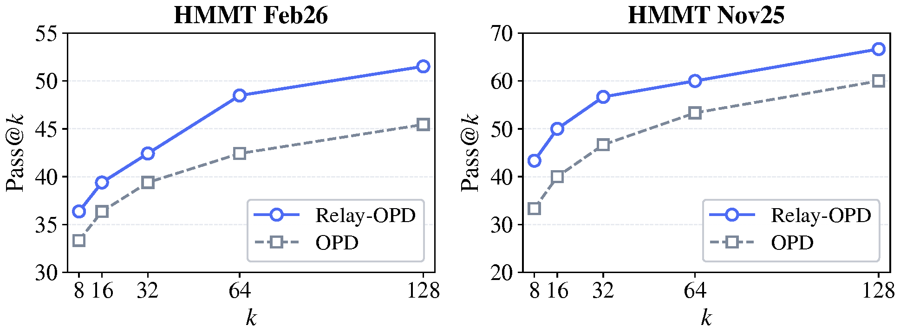
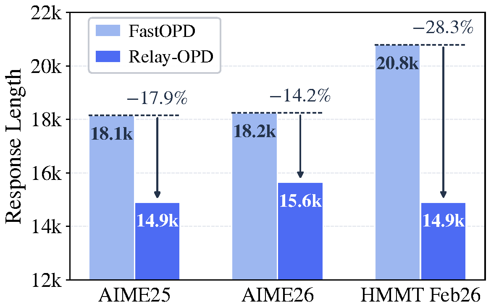

Motivation
On-policy distillation (OPD) grounds token-level supervision in the student's own trajectory, but it suffers from prefix failure: once the student commits to a wrong reasoning direction early on, all subsequent generation builds on this deviation, producing long misdirected continuations that elicit unreliable supervision and waste training compute. We identify a teacher–student continuation asymmetry on failed prefixes: the teacher tends to re-examine existing reasoning and redirect, while the student keeps pushing along the original direction. This asymmetric behavior is a natural, label-free online signal for locating potential prefix failure — we call the corresponding position the handoff trigger.
Trajectory intervention experiments built on this signal yield two observations. [1] Local correction suffices: even when the teacher only replaces the reflection token at trigger positions (L = 0), teacher tokens amounting to merely 0.35% of all generated tokens raise accuracy from 27.73 to 34.96 (+7.23%). [2] Valuable supervision is front-loaded: skipping early triggers degrades accuracy sharply (41.99 → 33.98 / 29.49 with periodic delays r = 1 / 3 at L = 3), and the teacher–student gap shrinks monotonically as generation position advances. Prefix failure should therefore be addressed by early, local teacher intervention at detected failure points, before the wrong direction becomes entrenched.


Abstract
On-policy distillation (OPD) grounds token-level supervision in the student's own trajectory, yet suffers from prefix failure: once the student commits to a wrong reasoning direction, all subsequent generation builds on this deviation, producing misdirected continuations that elicit unreliable supervision and waste compute. We identify a teacher–student continuation asymmetry on failed prefixes, where the teacher tends to redirect while the student continues along the original direction, and convert it into a label-free handoff trigger in Relay On-Policy Distillation (Relay-OPD). During training, Relay-OPD constructs relay trajectories by letting the teacher briefly take over at detected trigger points to produce a teacher leg, after which the student resumes and is optimized on the resulting trajectory. A limited relay budget concentrates intervention on critical early positions while limiting departure from the student policy. With a Qwen3-4B teacher and Qwen3-0.6B/1.7B-Non-Thinking students on eight mathematical reasoning benchmarks, Relay-OPD achieves the best or second-best results on every benchmark, outperforming standard OPD by +5.73% and the strongest baseline FastOPD by +1.49% on average for 1.7B, with consistent gains at 0.6B. Training trajectory length is reduced by over 50%.
Methodology
Relay-OPD runs like a relay race. The student generates on-policy as usual; at every position, a handoff criterion checks whether the teacher's top-1 token is a reflection token while no reflection token appears in the student's top-K — the signature of a failed prefix the student would not fix on its own. When the trigger fires, the baton passes to the teacher: a short teacher leg of L paragraphs redirects the reasoning, after which the baton returns to the student. A relay budget of M teacher legs concentrates intervention on critical early positions, and the rollout terminates when the M-th teacher leg ends, keeping relay trajectories short. The student is then optimized on the relayed trajectory with token-level advantages, including on the relay tokens themselves, so it internalizes when and how to reflect.

Key Components
- Label-free handoff trigger: the teacher–student continuation asymmetry (reflection token in teacher top-1, no reflection token in student top-K) locates prefix failure online, during generation — no verifier or ground-truth label needed.
- Unified speculative decoding engine: the whole relay runs in one speculative decoding pipeline with the student as draft model and the teacher as target model; rejection sampling makes teacher-leg tokens follow the teacher distribution exactly, and batch verification of student drafts reduces serial teacher decoding steps.
- Relay budget (M, L): at most M teacher legs of L paragraphs each; the rollout ends when the M-th leg ends, front-loading supervision and cutting trajectory length.
- Relay-token objective: training on the executed relay tokens (rather than student drafts or teacher FKL) transfers the teacher's reflective behavior into the student policy.
Experimental Results
Main Results
Mean accuracy on eight mathematical reasoning benchmarks with a Qwen3-4B-Instruct-2507 teacher. Bold and underline denote the best and second-best results for each student. Subscripts in the Avg column give the training step of the best checkpoint; Train Len is the average rollout response length up to the best checkpoint.
| Method | AIME24 | AIME25 | AIME26 | MATH | AMC23 | Olymp. | HMMT Feb26 | HMMT Nov25 | Avg | Train Len |
|---|---|---|---|---|---|---|---|---|---|---|
| Teacher | 60.42 | 46.04 | 52.19 | 94.20 | 93.83 | 70.62 | 31.25 | 41.88 | 61.30 | — |
| Student: Qwen3-0.6B-Non-Thinking | ||||||||||
| Student | 1.77 | 2.40 | 0.73 | 44.10 | 24.45 | 16.36 | 0.76 | 3.85 | 11.80 | — |
| SFT | 4.90 | 7.60 | 4.06 | 59.45 | 34.92 | 26.74 | 1.89 | 3.02 | 17.82@110 | 4262 |
| KD | 4.17 | 7.19 | 4.79 | 57.75 | 35.23 | 27.15 | 2.94 | 2.71 | 17.74@110 | 4262 |
| GRPO | 8.23 | 15.21 | 10.00 | 68.60 | 46.56 | 35.42 | 7.86 | 6.04 | 24.74@110 | 3379 |
| OPD | 13.44 | 17.92 | 11.98 | 75.30 | 51.25 | 41.32 | 7.39 | 5.62 | 28.03@110 | 6900 |
| TRD | 4.58 | 8.54 | 3.96 | 57.60 | 36.33 | 26.93 | 3.79 | 2.81 | 18.07@20 | 3275 |
| FastOPD | 15.83 | 20.10 | 13.54 | 75.30 | 53.67 | 44.81 | 11.55 | 8.54 | 30.42@100 | 3302 |
| SKD | 8.44 | 16.98 | 9.79 | 66.65 | 43.67 | 35.76 | 8.14 | 5.62 | 24.38@20 | 5800 |
| Relay-OPD (Ours) | 15.94 | 20.94 | 14.06 | 76.80 | 55.55 | 45.03 | 11.17 | 8.85 | 31.04@75 | 2490 |
| Δ vs OPD | +2.50 | +3.02 | +2.08 | +1.50 | +4.30 | +3.71 | +3.78 | +3.23 | +3.01 | −63.9% |
| Student: Qwen3-1.7B-Non-Thinking | ||||||||||
| Student | 12.60 | 9.58 | 7.40 | 71.95 | 47.89 | 38.54 | 6.34 | 4.38 | 24.84 | — |
| SFT | 23.33 | 19.48 | 16.15 | 81.40 | 59.45 | 46.62 | 12.59 | 6.56 | 33.20@110 | 4262 |
| KD | 23.54 | 21.15 | 15.31 | 81.45 | 60.23 | 48.07 | 12.78 | 7.50 | 33.75@110 | 4262 |
| GRPO | 24.58 | 22.08 | 15.62 | 80.35 | 60.16 | 48.74 | 14.49 | 9.38 | 34.42@105 | 2558 |
| OPD | 35.83 | 25.52 | 23.33 | 85.70 | 70.08 | 55.27 | 20.08 | 14.06 | 41.23@55 | 4658 |
| TRD | 19.27 | 19.69 | 12.71 | 77.70 | 55.47 | 44.18 | 11.93 | 4.58 | 30.69@40 | 2785 |
| FastOPD | 42.29 | 30.42 | 26.35 | 87.95 | 74.30 | 58.16 | 23.58 | 20.73 | 45.47@45 | 2709 |
| SKD | 33.12 | 30.73 | 28.85 | 87.35 | 72.42 | 54.41 | 20.08 | 11.88 | 42.35@35 | 4753 |
| Relay-OPD (Ours) | 42.71 | 32.81 | 30.52 | 89.50 | 76.88 | 58.79 | 24.72 | 19.79 | 46.96@35 | 2296 |
| Δ vs OPD | +6.88 | +7.29 | +7.19 | +3.80 | +6.80 | +3.52 | +4.64 | +5.73 | +5.73 | −50.7% |
Analysis




Key Insights
A Label-Free Online Failure Signal
The teacher–student continuation asymmetry on failed prefixes — teacher redirects, student pushes on — is converted into a handoff trigger that locates prefix failure during generation, with no verifier or label.
Early, Local Correction Wins
Replacing as little as 0.35% of tokens at trigger points yields +7.23% accuracy; delaying triggers sharply hurts. Supervision value is front-loaded, so Relay-OPD intervenes early and briefly instead of truncating or rewriting after the fact.
Exact Teacher Legs in One Engine
The whole relay runs in a single speculative decoding pipeline: the student drafts, the teacher batch-verifies, and rejection sampling guarantees teacher-leg tokens follow the teacher distribution exactly.
Better and Cheaper
Best or second-best on all eight benchmarks for both students (+5.73% over OPD, +1.49% over FastOPD at 1.7B), while cutting average training trajectory length by 50.7% (1.7B) and 63.9% (0.6B).
Citation
@misc{xu2026passbatontrajectoryrelayedonpolicy,
title={Pass the Baton: Trajectory-Relayed On-Policy Distillation},
author={Haolei Xu and Xiaowen Xu and Haiwen Hong and Zixuan Ni and Hongxing Li and Yiwen Qiu and Weiming Lu and Yongliang Shen},
year={2026},
eprint={2607.26057},
archivePrefix={arXiv},
primaryClass={cs.CL},
url={https://arxiv.org/abs/2607.26057},
}
Acknowledgements
We acknowledge the webpage template from Ximing Xing.